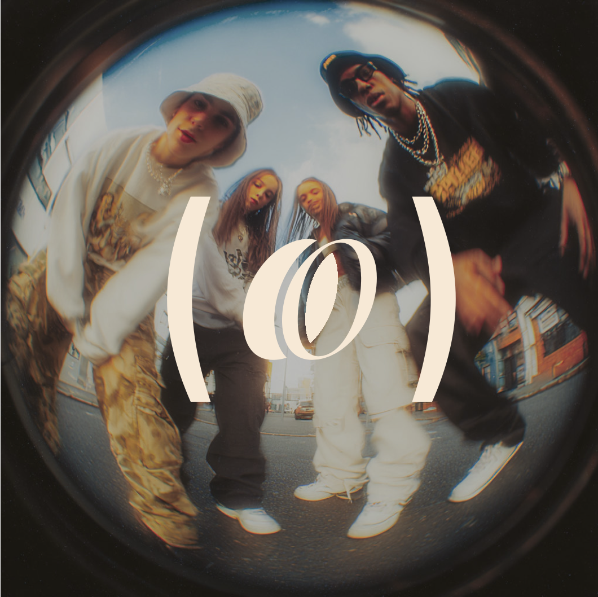
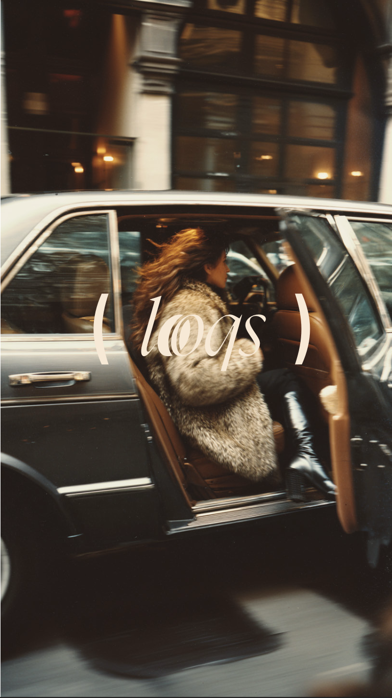
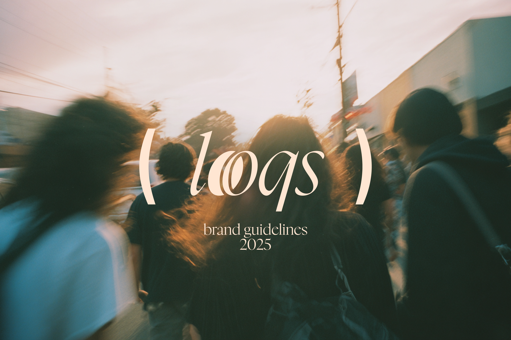
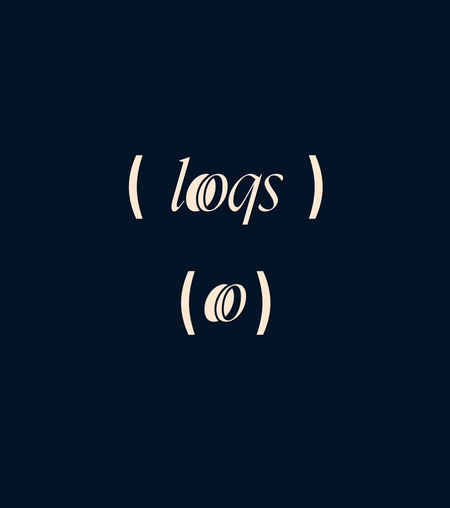
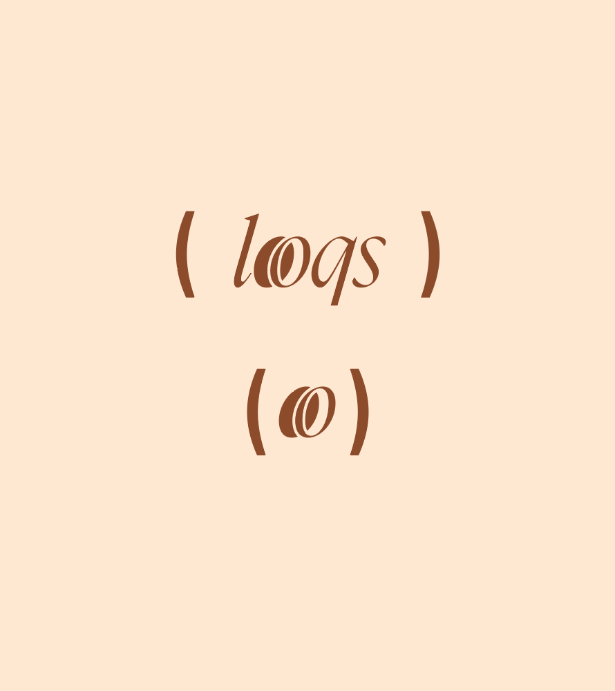

Looqs was building something genuinely new — an app that uses AI to read your personal color season and build outfits around it. But the brand had no visual identity to match the ambition of the product.
The challenge was creating a look and feel that could live inside a tech product while never feeling cold or generic. It needed to feel like fashion. Like a friend who actually knows what looks good on you.


Built the identity around the tension between analog warmth and digital precision. The logo is modern and elegant — clean enough to live in an app UI, distinct enough to own a mood board. The color system is pulled directly from Kodak Portra 400 tones: warm faded highlights, soft shadows, that cinematic film grain that makes skin glow.
Generated the AI assets with an editorial street photography direction — Canon AE-1 aesthetic, urban energy, real people in real light. Then packaged everything into brand guidelines that any developer or designer on the team could pick up and run with.

